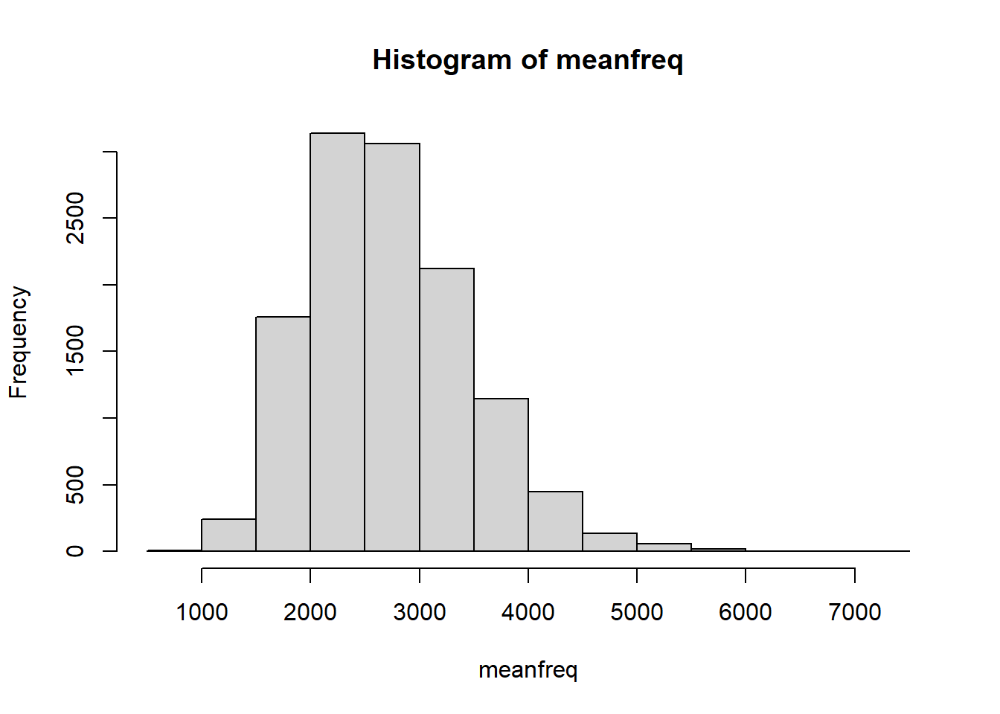
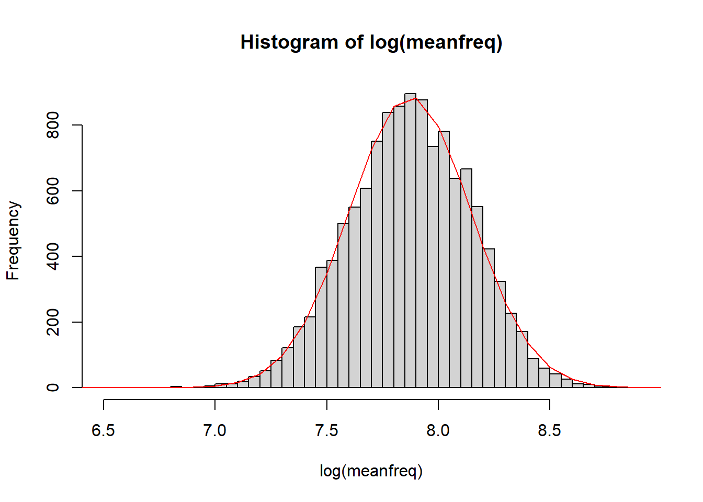
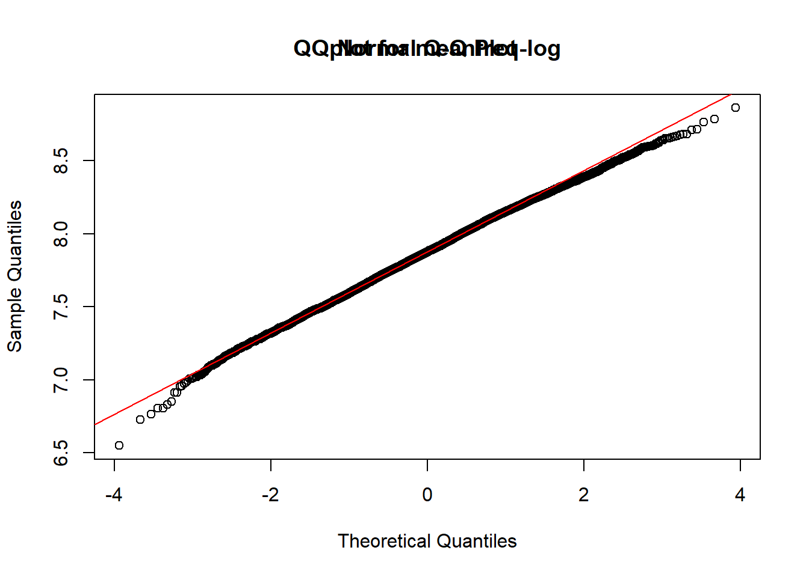
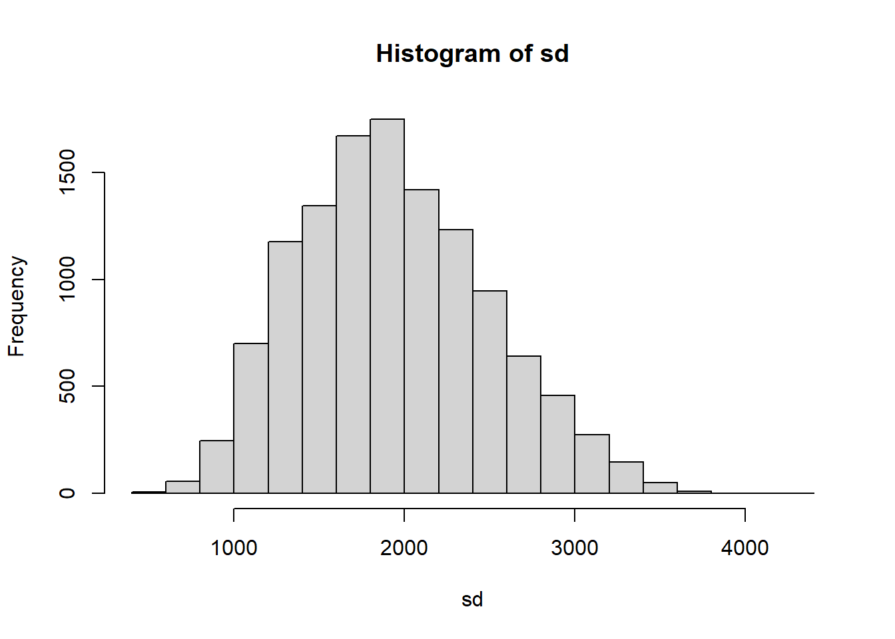

Data Analysis
Load Data
data_path = "../data/train.csv"
data = read.csv(data_path)
head(data)## id meanfreq sd median Q25 Q75 IQR skew
## 1 0 3521.667 2332.212 2997.294 1660.408 4621.867 2961.459 0.11656897
## 2 1 4189.998 2430.977 4302.741 1832.028 5901.071 4069.043 0.04560770
## 3 2 3154.455 2150.497 2609.968 1460.612 4053.928 2593.316 -0.16147499
## 4 3 4384.338 3029.302 3426.479 1596.072 7283.314 5687.242 0.02416762
## 5 4 4557.150 3158.111 4543.116 1608.165 8074.335 6466.170 0.11711588
## 6 5 4069.004 2983.199 2565.487 1305.284 6961.581 5656.297 0.13049391
## kurt sp.ent sfm mode centroid meanfun minfun maxfun
## 1 0.9817728 2.308696 0.008450270 1761.333 3521.667 32.33476 153.1934 3995.790
## 2 0.9214181 3.522410 0.022862796 2095.499 4189.998 42.56545 154.0434 3993.462
## 3 0.3882481 2.027891 0.006853276 1577.728 3154.455 26.15712 153.4610 3995.524
## 4 1.4739316 4.823092 0.084471270 2192.669 4384.338 37.56627 153.6399 3994.671
## 5 1.2885699 3.820815 0.100988194 2279.075 4557.150 29.34924 153.8535 3994.646
## 6 0.7668548 3.726702 0.073939204 2035.002 4069.004 29.89368 153.2515 3995.253
## meandom mindom maxdom dfrange modindx gender accent
## 1 0.06084856 9.842593e-04 194.17128 194.17029 5914.581 female canada
## 2 0.04495757 7.060266e-04 102.27859 102.27788 7693.945 female canada
## 3 0.08144125 2.950821e-04 164.99316 164.99287 5261.606 female canada
## 4 0.01039643 3.165859e-08 29.66787 29.66787 7942.756 nan nan
## 5 0.01848914 9.267869e-07 85.19259 85.19259 8383.634 nan nan
## 6 0.01521549 6.052965e-07 32.57839 32.57839 7575.469 nan nanCentroid
We firstly load the data and draw a histogram of the
centroid column.
centroid = data$centroid
hist(centroid)
Then, we calculate the mean and standard deviation of the
centroid column.
centroid_mean <- mean(centroid)
centroid_sd <- sd(centroid)
print(paste("Mean of centroid:", centroid_mean))## [1] "Mean of centroid: 2721.31899603461"print(paste("Standard deviation of centroid:", centroid_sd))## [1] "Standard deviation of centroid: 741.438432305616"Histogram with overlaid normal curve
hist(centroid, probability = TRUE, main = "Histogram of Centroid with Normal Curve", xlab = "Centroid")
curve(dnorm(x, mean = centroid_mean, sd = centroid_sd), col = "darkblue", lwd = 2, add = TRUE, yaxt = "n")
QQ plot
qqnorm(centroid, main = "QQ Plot of Centroid")
qqline(centroid, col = "steelblue", lwd = 2)
Log-transformed centroid
centroid_log <- log(centroid)
hist(centroid_log, breaks = 80, main = "Histogram of log(centroid)", xlab = "log(centroid)")
centroid_log_mean <- mean(centroid_log)
centroid_log_sd <- sd(centroid_log)
print(paste("Mean of log-transformed centroid:", centroid_log_mean))## [1] "Mean of log-transformed centroid: 7.87214455103932"print(paste("Standard deviation of log-transformed centroid:", centroid_log_sd))## [1] "Standard deviation of log-transformed centroid: 0.272639109655038"Histogram with overlaid normal curve
hist(centroid_log, probability = TRUE, main = "Histogram of log-transformed Centroid with Normal Curve", xlab = "log(centroid)")
curve(dnorm(x, mean = centroid_log_mean, sd = centroid_log_sd), col = "darkblue", lwd = 2, add = TRUE, yaxt = "n")
QQ plot for log-transformed centroid
qqnorm(centroid_log, main = "QQ Plot for log-transformed centroid")
qqline(centroid_log, col = "red")